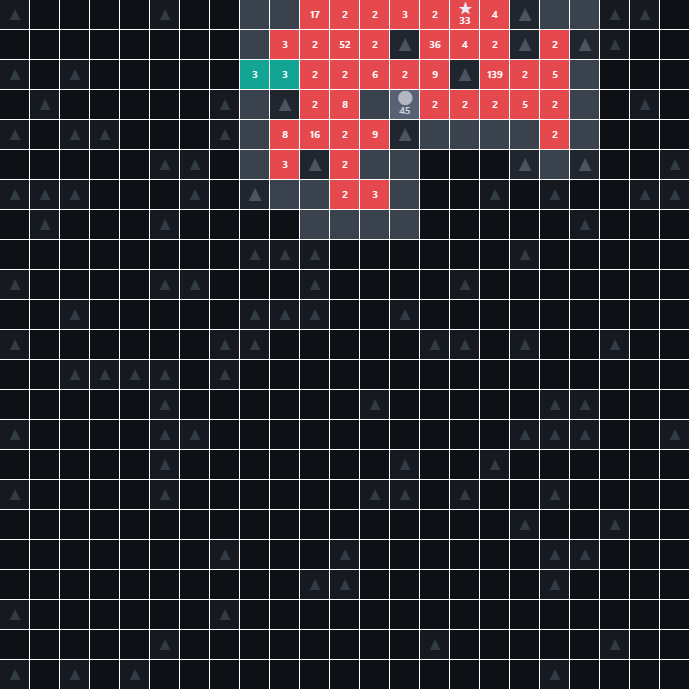
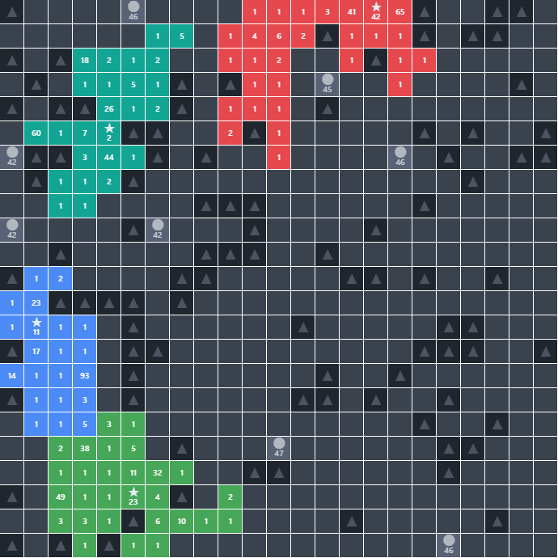

A generals.io FFA Bot
A from-scratch environment for building and scoring bots in generals.io free-for-all — where 2-8 armies grow on a fog-of-war grid and the last general standing wins.

Overview
generals.io FFA is a real-time strategy game: each player starts with one general on a grid, grows an army, and spreads across land and cities, around impassable mountains, under fog of war. Capture a rival’s general and you absorb everything they own — the classic snowball. I wanted to build a bot for it, but the honest first move wasn’t the bot. It was the world it plays in. The design spine is that a bot is a pure Observation → Move function, so the same bot code can run against my own simulator today and, through the same interface, a live server later. Get the environment right and the brain becomes swappable.
What I built
It starts with the simulator: a numpy engine matched to generals.io’s rules for 2-8 players — army growth (generals and cities tick up every turn. On every 25th turn every owned tile grows), movement and capture, neutral cities, and per-player fog of war that reveals only a 3×3 halo around your own tiles. Map generation places generals with guaranteed mutual reachability, and the whole game is deterministic from a seed.
On top sits a heuristic commander — a priority ladder: defend the general first, then grab adjacent land, take an affordable neutral city, otherwise gather the largest army and march it toward the nearest enemy, remembering where enemy generals were last seen even after they slip back into fog. Pathfinding is plain breadth-first search over passable tiles.
To know whether a bot is any good, I built an evaluation harness: it plays seeded games, ranks finishers by survival, then land, then army, and converts those placements into pairwise Elo updates on a bot ladder — plus a gauntlet that only certifies a new version as “better” when it clears both a win-rate and an Elo-gain bar.
Then the learning layer: a behavior-cloning pipeline that trains a network to imitate the heuristic. Each position is encoded ego-centrically into 15 feature planes, moves into an eight-directions-per-tile action space with a legality mask, and a fully-convolutional policy-value network — size-agnostic, so it plays any board — learns the heuristic’s moves against a placement-based value target. The trained net drops into the same Observation → Move slot as every other bot.
Highlights
- A deterministic, fog-of-war FFA simulator for 2-8 players, matched to generals.io’s rules.
- A heuristic commander with a defend / expand / gather priority ladder and enemy-general memory that survives fog.
- An Elo ladder and regression gauntlet that fold whole-game placements into one comparable rating.
- A behavior-cloning pipeline: 15-plane ego-centric encoder, masked eight-direction action space, and a fully-convolutional policy-value net that imitates the heuristic.
- Built test-first — 100 tests across 27 files cover the engine, the bots, evaluation, and the RL codecs.
- Next, by design: a live-server client on the same
Observationinterface, and self-play PPO to push past the heuristic it currently imitates.
Gallery

